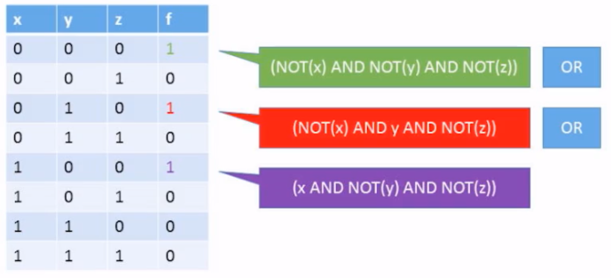
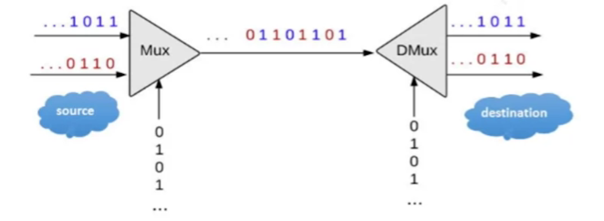
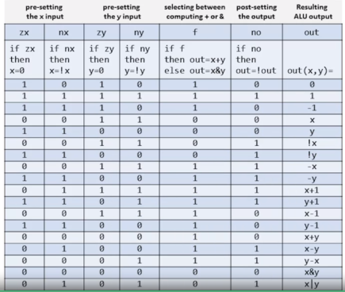

Nand2Tetris Section I - Hebrew University
这门课将带领我们使用普通的与非门 (NAND gate) 从零开始搭建一个完整的 general-purpose computer；不得不说这真是太极客了，很符合我对计算机科学的酷炫想象。
这门课课时并不长，但涵盖了从最底层的 logic gate，中层的 assembly languages 到顶层的 programming languages 与 OS 等一系列计算机的基本组成部分，可谓是具体而微。目标：一个月内 (10.6 之前) 搞定！
This article is a self-administered course note.
It will NOT cover any exam or assignment related content.
Boolean Functions & Gate Logic
这门课确实做到了完全的 non-prerequisite；本节的内容十分基础，但我还是从中学到了不少新东西。
Boolean Identities
三个基本的布尔函数：AND \(\land\), OR \(\lor\) 与 NOT \(\lnot\) .一个 Boolean Algebra 具有以下性质：
- Commutative Laws (交换律).
- \((x\land y)=(y\land x)\).
- \((x\lor y)=(y\lor x)\).
- Associative Laws (结合律).
- \((x \land (y\land z))=((x\land y)\land z)\).
- \((x\lor (y\lor z))=((x\lor y)\lor z)\).
- Distributive Laws (分配律).
- \((x\land(y\lor z))=(x\land y)\lor (x\land z)\).
- \((x\lor (y\land z))=(x\lor y)\land (x\lor z)\).
- De Morgan Laws.
- \(\lnot(x \land y)=(\lnot{x})\lor(\lnot y)\).
- \(\lnot(x\lor y)=(\lnot{x})\land (\lnot y)\).
应用这些性质，我们能够对任意的 Boolean algebra 进行化简/等价变形；但需要注意的是，找到给定的 Boolean algebra 的最简化形式这个问题是 NP-hard 的；不存在解决该问题的 general algorithm。
Truth Table to Boolean Expression
对于一张给定的真值表，如何找到等价的布尔表达式？这个问题很有应用价值。至少当我在写 project 时发现，这一准则在 chip design 中作用很大。我们来看一个例子：

对于每个值为 1 的行，我们查看对应的变量；若为 0，则对其取反。最后把所有变量与起来 (保证最后的结果为 1)：以第一行为例，由于 \(x,y,z\) 均为 0，该行对应的 constraint 为 \((\lnot x)\land (\lnot{y})\land (\lnot z)\)；而第三行中 \(y\) 的值为 1，我们不需要对其取反，因此对应的 constraint 为 \((\lnot{x})\land y\land (\lnot{z})\).
把这一步得出的所有 constraints 再或起来，就得到了这张真值表对应的布尔表达式。
Multiplexer
当初在 ENGG1310 中接触了 multiplexer (多路复用器) 这个概念，奈何该课实在过于水，只知道猛灌大量的概念，因此时至今日我只对这个名字产生了些许印象。而在 Nand2Tetris 这门课程中，仅仅用了 10 分钟我就掌握了 multiplexer 的基本原理，课程质量高下立判。
multiplexer 与 demultiplexer 其实是一种 chip design，其宏观表现即为通讯系统中著名的复用器/解复用器。用 HDL (Hardware Description Language) 描述的 multiplexer 与 demultiplexer 的 API 如下：
1 | /** |
多路复用器根据输入的 sel
流同时将多路的输入比特流转化为一路的输出比特流；解复用器则是上述过程的逆过程。整个流程是
simultaneous 的，使得多路信息能在单条信道上同时进行传输。

ALU Implementation
这一节我们将使用 project 01 中设计的众多 chips 来构建一个 ALU (Arithmatic Logic Unit, 算术逻辑单元)。
2's Complement
这是因为 binary addition 本质上是 modular addition。对于 \(n\)-bits 下的 binary addition，overflow bit (溢出位) 将会被直接舍弃；这实质上相当于将结果对 \(2^n\) 取模。
这样，计算 substraction \(x-y\) 也变得十分简单：\(x-y=x+(-y)\)。给出 \(y\)，我们能通过下面的方式迅速计算出 \(-y\) 的 2s complement：将 \(y\) 取反后加 1。这是因为：\(2^n-y=1+(2^n-1)-y\)。
Adder
所有算术运算的基础是加法运算：因此，ALU 的一个基础单元是 adder (加法器)。此外由于 2's complement 的存在，adder 可以同时完成 addition 与 substraction。
一个 binary adder 由一个 half adder (半加器) 与若干个 full adder (全加器) 组成：
- Half Adder: 模拟 LSB 的加法运算。输入
a,b；输出out与carry. - Full Adder: 一个 full adder 可以由两个 half adders 组成
(这也是半加器名称的来源)；模拟普通位的加法运算。输入
a,b与carry(前一位), 输出out与carry。
注意，若 MSB 在进行加法运算后产生了 carry bit，该 carry bit 将被忽略。
Arithmatic Logic Unit
ALU 的基本模型如下：
- 输入
input1,input2与某个 pre-defined arithmetic/logical function \(f\). - 输出 \(f(\)
input1,input2\()\). - 输出两个 output control bits
zr与ng.
其中，函数 \(f\) 被 6 个 input
control bits 所 specified：zx, nx,
zy, ny, f 与
no，每个 input control bit 指定了一种特定的 operation。ALU
将根据每个 control bit 的值依次执行这一系列
operations，最后得到的输出将与某个算数/逻辑函数 \(f\) 一致。

理论上来说，6 个 input control bits 可以代表 \(2^6=64\) 种不同的 \(f\)；但本课程中只要求我们实现 18 种。真正的 ALU 的确能够支持远超 18 种的函数以执行不同的算数/逻辑运算。
两个 output control bits zr, ng 则用于标识
ALU 计算结果 out 的性质：
- if
out == 0thenzr = 1, elsezr = 0. - if
out < 0thenng = 1, elseng = 0.
当我们构建整个计算机的结构时，这两个 output control bits 提供的信息将至关重要 [stay tuned].
Problematic Combinatorial Logic
到目前为止，我们构建的所有 chips 都是 combinational chips (组合逻辑芯片/器件)；combinatorial logic (组合逻辑) 意味着芯片任意时刻的稳态输出仅仅取决于该时刻的输入 (i.e., \(\mathtt{out}(t)=f(\mathtt{in}(t))\))。组合逻辑器件使得计算机具有了「计算」(compute values) 的能力。
其实在写 projects 的时候就能感觉到这一点：由于所有 HDL 语句都是 synchronized 的，chips 的输入与输出仿佛是同时发生的。像这样，仅仅建立在组合逻辑器件上，缺少时间概念的计算机有两个致命的问题：
- It cannot store and recall values (i.e., it cannot memorize things).
- The system state is not stablized.
第一点很好理解：组合逻辑器件的输出仅仅与该时刻的输入有关，而与前一时刻的状态无关；这一定义本身就与「记忆」这一概念相悖。
第二点则需要稍微进行说明：虽然组合逻辑器件刻意忽略了时间的概念，但现实中，无论是器件的输入与输出之间还是不同器件间信号的传输都会产生时间造成的误差。举例来说，ALU 此时需要计算 \(x\), \(y\) 两数之和：
- \(x\) 位于 ALU 临近的某个 register [stay tuned]。
- \(y\) 位于某个比较偏远的 RAM register。
In this case，\(x\) 与 \(y\) 到达 ALU 的时间一定会有差异。于是，在产生稳定的 \(x+y\) 输出之前，ALU 的输出完全没有意义 (generate garbage)。当器件数较少时这个问题的影响可能不会太大；但计算机是一个含有成千上万个元件的精密结构，如果无法实现 architecture synchronization，微小的误差将会导致巨大的混沌。
为了解决以上的问题，一个新的设计逻辑 - sequential logic (时序逻辑) 应运而生。在该逻辑下，芯片在某时刻的稳态输出不仅取决于当前的输入，还与前一时刻输入形成的状态有关 (i.e., \(\mathtt{state}(t)=f(\mathtt{state}(t-1))\))。
注意在 sequential logic 的定义中，我们使用了 state (状态) 这一概念：这也是其与 combinatorial logic 的最根本区别之一。sequential chips (register, binary cell, RAM 等等) 几乎都与计算机的存储功能相关。
Sequential Logic & DFF
Reference
This article is a self-administered course note.
References in the article are from corresponding course materials if not specified.
Course info:
Lecturer: Prof. Shimon Shocken, Prof. Noam Nisan.
Course textbook:
(Nisan N., Schocken S., 2008) The Element of Computing Systems: Building a Modern Computer from First Principles.